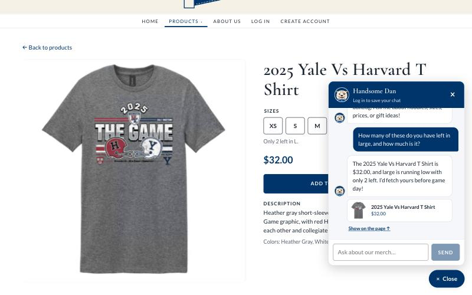
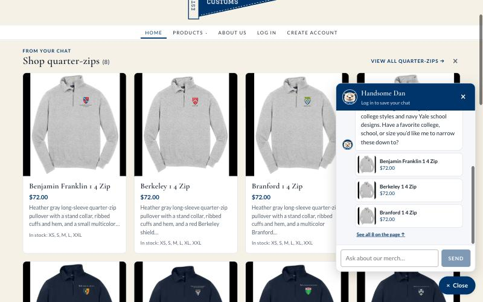
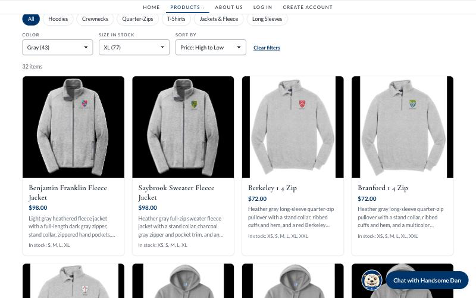

Campus Customs — Live App Check
1. Chat checks the inventory level of an item Pass

What this proves: On the 2025 Yale Vs Harvard T Shirt page, the shopper asked "How many of these do you have left in large, and how much is it?" Handsome Dan looked it up with the check_stock tool and answered "$32.00… only 2 left," which matches the database exactly (price 32.0, size L = 2 units) and the page's own "Only 2 left in L."
2. Dynamic search-results cards after a category question Pass

What this proves: Asking "What quarter-zips do you have?" made the agent search the catalogue and return structured matches, which the site turned into a "From your chat: Shop quarter-zips (8)" panel of cards with image, name, price, short info, and in-stock sizes, plus a "View all Quarter-Zips" link. The prices ($72.00) and sizes (for example, Benjamin Franklin 1 4 Zip: XS, S, M, L, XXL) match the database, and each card links to its product page.
3. Usability feature from Problem 9: color and size filters with price sort Pass

What this proves: On the Products page, the new dropdowns narrowed the catalogue to gray items with XL in stock, sorted by price from high to low. The 32 results ($98.00 fleece jackets first, ending at $32.00 tees) match an independent database count of 32. The Handsome Dan avatar from the same problem is also visible beside the chat button.